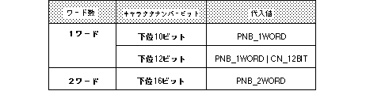

<HTML>
<HEAD>
<TITLE> Register NBG pattern name data </​​TITLE>
</HEAD><BODY>

<P> <A HREF="func36.htm"> Return to previous page </A> | <A HREF="../findex.htm"> Return to menu </A> | <A HREF = "func38 .htm "> Go to next page </A> </BR> </P> <HR>


<P ALIGN="right">
<B>void<BR>
Scroll function </B>
</P>

<H1>slPageNbg0,1,2,3</H1>

<P ALIGN="right">
<B> Register NBG pattern name data </​​B>
</P>

<H3> Format </H3>
<P>
void slPageNbg0(celadr , coladr , type)<BR>
void slPageNbg1(celadr , coladr , type)<BR>
void slPageNbg2(celadr , coladr , type)<BR>
void slPageNbg3(celadr , coladr , type)<BR>
void *celadr ;<BR>
void *coladr ;<BR>
Uint16 type ;
</P>

<H3> Parameter </H3>
<PRE>
celadr First address on VRAM of cell data stored in VRAM
type Uint16 type numeric value corresponding to pattern name data type specification
</PRE>

<H3> Function </H3>
<P>
Sets the page for normal scroll “NBG0, NBG1, NBG2, NBG3”. <BR>
The parameters correspond to the VRAM start address (VRAM) of the character pattern data used by the scroll plane, the color data start address (color RAM) of the color data used by the character pattern, and the data type designation of the pattern name data Specify each Uint16 type numerical value.
</P>

<H3> Return value </H3>

<P> None </P>

<H3> Remarks </H3>
<P>
For the parameter “type”, substitute the value in the table below corresponding to the pattern name data type.
</P>


<BLOCKQUOTE>
Note) The values ​​in the above table are defined in “sl_def.h” included with the system.
</BLOCKQUOTE>

<P> Reference: Chapter 8 Scroll </P>

<P ALIGN="right">slPageNbg0,1,2,3</P>

<HR>
<P> <A HREF="func36.htm"> Return to previous page </A> | <A HREF="../findex.htm"> Return to menu </A> | <A HREF = "func38 .htm "> Go to next page </A> </BR> </P> </BODY> </HTML>